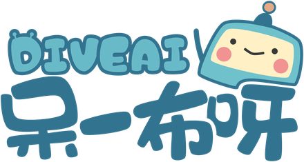
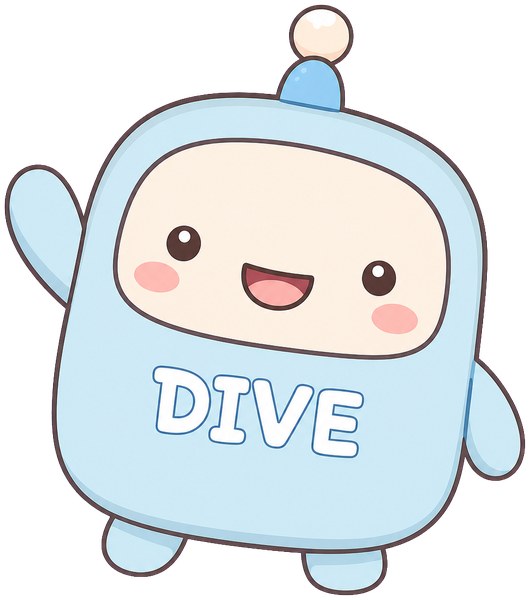
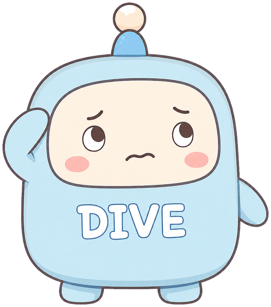
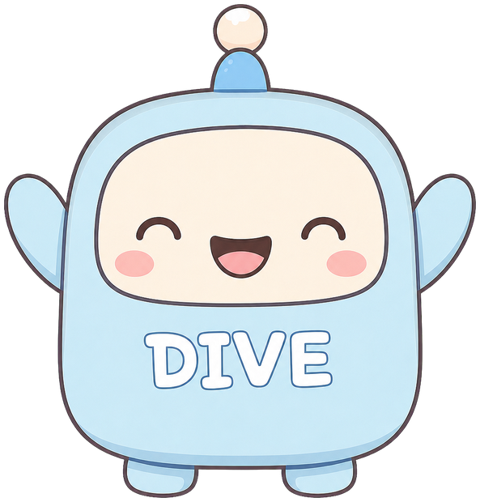
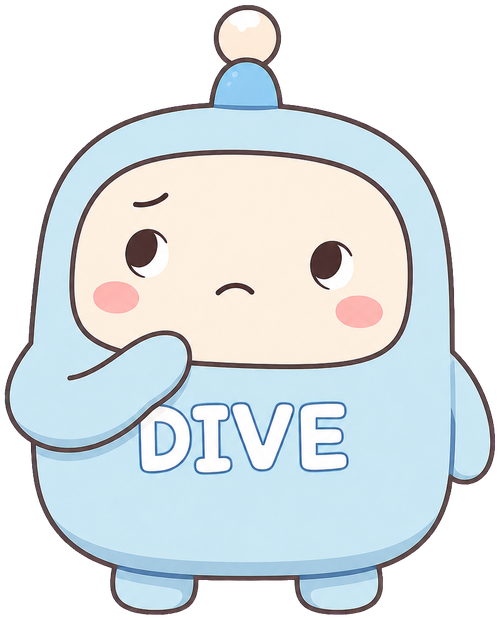
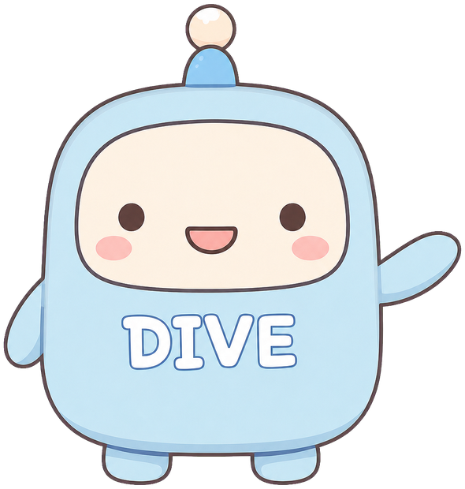
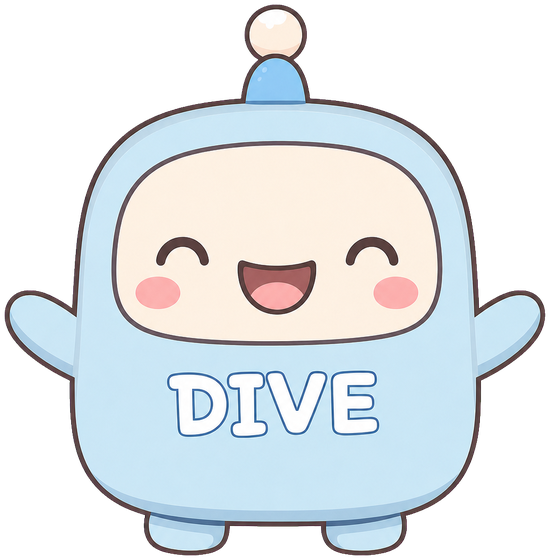

Agentic Work 與 AI 工作現場

一個一個抄檔名給 AI
想分類、排清單
自己建 5 個資料夾
87 個檔案一個一個拖進去

「幫我整理桌面，先給我看計畫」
自己打開資料夾、看所有檔案
提出分類計畫
「可以，照做」
建資料夾、搬檔案，回報結果

| 對話式（Chat） | 代理式（Agentic） | |
|---|---|---|
| 你在做的事 | 問問題 | 交辦一件工作 |
| AI 像是 | 顧問 | 員工、同事 |
| 過程 | 一問一答，你全程在場 | 多步驟自己做，你可以離開 |
| 能碰的東西 | 對話框裡的文字 | 檔案、瀏覽器、工具 |
| 你拿到的 | 一段回答 | 一份成品 |
Claude、ChatGPT 現在都是同一個介面裡，兩種用法並存。
我是在聊天，
還是在交辦一件有成品的工作？
產品名稱會一直改，這個判斷標準不會。
不管多聰明，模型本身做的事只有一件——接下一個字。
它不能自己打開你的資料夾。
它不能自己按下「新增資料夾」。
它不能自己上網查最新資料。

負責想：理解、規劃、判斷、生成。
負責做：把模型說的「我要開這個檔案」真的執行，再把結果回報給模型。
| 你用 AISuite 寫過的 | Claude、ChatGPT 裡對應的 |
|---|---|
while 迴圈：想 → 做 → 看結果 | 內建的 agent loop |
| 自己寫的 Python 函數當工具 | 讀寫檔、終端機、瀏覽器、搜尋 |
| 寫在程式裡的 system prompt | CLAUDE.md／AGENTS.md |
| 自己處理錯誤和重試 | 產品幫你處理 |
上個單元你蓋了一間小工坊；今天，你走進一間裝備齊全的辦公室。

有自己的電腦（沙盒），可以存檔、跑程式。
讀寫檔案、終端機、瀏覽器、網路搜尋。
接上 Gmail、行事曆、雲端硬碟等你的 App。
一個資料夾＋一份 SKILL.md，教它某件事的「標準作業流程」。
CLAUDE.md／AGENTS.md，每次上工前先讀。
時間到了，自己開工。
💡 MCP 管「接得上」，Skills 管「會做法」。
等等第 4 站就來寫它 👉
做完我會拿到什麼？放在哪？什麼格式？
哪些可以動、哪些不能動？
我要怎麼驗收？
你不說，它就只能猜。呆一布很聰明，但它不會讀心。
messy-desktop.zip，解壓縮每開一個新對話，它都不記得你上次教過什麼。
在工作資料夾放一份文字檔，AI 每次上工前都會先讀。
Claude 讀的手冊。
Codex 等其他工具讀的手冊。
內容一樣，只是檔名不同。它就是你「教 AI 用你的方法做事」的地方。
你現在看的這份投影片，是呆一布團隊和 AI 一起做的。我們的資料夾裡就有一份 CLAUDE.md：
請它一題一題問你的習慣、要求、地雷。
它寫初稿，你刪改到滿意。
「這次我糾正了你哪些地方？整理後寫進 CLAUDE.md。」
手冊會越用越厚，你的 AI 員工也會越來越懂你。
重點是「一題一題」——讓它問，你只要回答。
2026 年 4 月，Andrej Karpathy（OpenAI 共同創辦人之一、前 Tesla AI 負責人）分享了一個點子：
每次提問，AI 都從一堆原始文件裡臨時翻找。問完就散了，下次重來。
讓 AI 持續整理並維護一套互相連結的 wiki，知識會越積越多。
CLAUDE.md／AGENTS.mdwiki 長什麼樣、怎麼收資料、怎麼回答、怎麼維護。
你和 AI 一起寫wiki/摘要頁、概念頁、人物頁，彼此互相連結。
AI 建立和更新raw/文章、講義、筆記、圖片。是事實的來源。
AI 只讀、不改又是它！整個 wiki 怎麼長，由手冊決定。
丟一份新資料進 raw/，叫它整理進 wiki：寫摘要、更新相關頁、補連結。
對 wiki 發問；好的答案也可以存回 wiki。
定期請它檢查：有沒有矛盾、過時、沒連到的頁面。
📎 wiki 裡通常還有 index.md（目錄）和 log.md（工作日誌）。
迴圈、工具，全部自己寫。
骨架有人幫你搭好。
幾乎不用寫程式。
交辦就好。
用程式把 agent 的工作畫成一張「圖」：每個步驟是一個節點，箭頭決定下一步去哪。
適合流程要精準控制、要上線長期跑的系統
幫每個 agent 設定角色，讓它們分工合作。
適合工作可以清楚拆成不同角色的情況
原本是自動化工具，在畫布上拖拉節點、連線就能做流程，現在內建 AI Agent 節點。
適合固定、會重複觸發的流程，不太想寫程式
自己蓋要自己顧：迴圈、工具、部署、金鑰、錯誤處理……代理產品把這些都包好了。
AI 動手越多，你越要會檢查。成品你簽名，就是你負責。
什麼是「好」？這件事 AI 沒辦法替你決定。
小心「增強陷阱」：產量變多了，能力卻變弱了。
手冊第一版＋更新後的版本＋一句話：「我改了什麼？為什麼？」
你出一張嘴，AI 動手；
而你的方法，寫在手冊裡。
